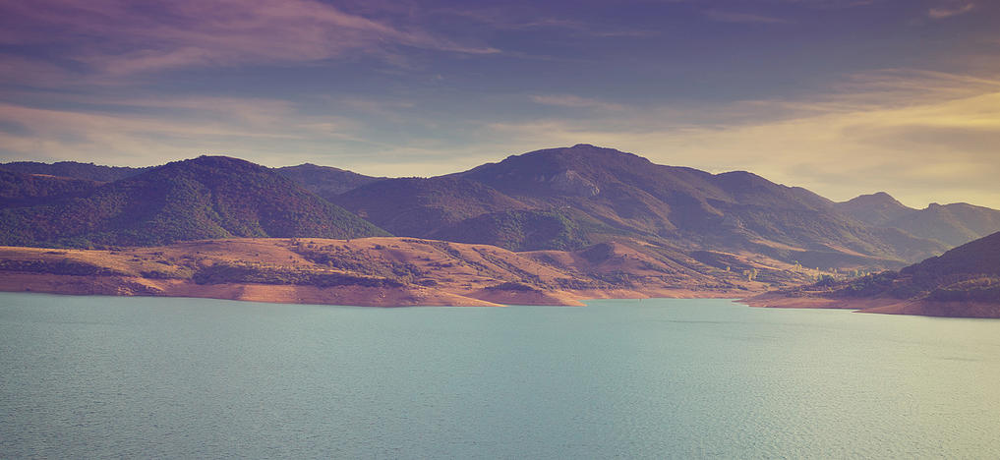
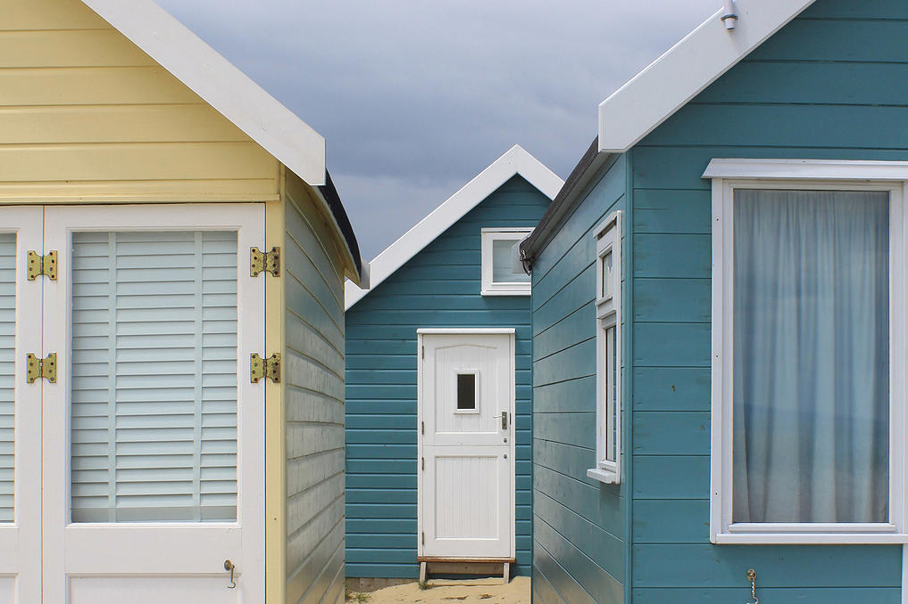

As the earth's population increases, we need to be more conscious on how we use and conserve water. Any ideas? Let's implement them. Earth Community Garden tries to use the most water conscious methods, but there is always room for improvement.
Water Conservation
Food, clothing and shelter are often referred to as the basic necessities of life. Because Earth Community Garden is directly involved with the production of one of these, food, it has the potential to create practices for the betterment of life and alleviation of inequality.
Necessities of Life
Earth Community Garden believes that it is the responsibility of each of us as individuals, and society as a whole to minimize our impact on this planet and beyond. Simple things like riding a bike instead of driving can do this. HAVE OLD GARDEN STUFF? Donate it to us!
Reducing Carbon Footprints
It goes without saying that the climate greatly dictates the resources for gardening area. Earth Community Garden looks for the most sustainable methods in any given location by using a "stone's throw away" theory of resources.
Climate and Gardening